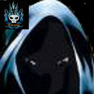

Forums galactiques > Assemblée Galactique : diplomatie officielle > La Guilde des maudits!
Pages : 1 2
| Dhrojno Respect diplomatique : 19  14/01 ETU 16:38 | Score : 15 Détails Alors que les commandants discutaient entre eux, un être dont on ne voit pas le visage apparut. Le silence se fit rapidement et il alla vers le pupitre et prit la parole:
Chers Commandants de toutes parties de cette galaxie, je suis ici devant vous sur la volonté de mon maître pour vous faire part de sa pensée. Il s'interrompit un instant et regarda en l'air, puis reprit: Aujourd'hui, mon maitre m'a donné la mission de vous avertir qu'il y aura bientôt un recrutement dans la Guilde des maudits. Ne cherchez pas à nous contacter, le maître fera savoir à ceux qu'il trouve digne de venir le rejoindre. Bientôt, vous serez peut-être un des grands de cet univers. Mais si au contraire, vous êtes jugé par le maître comme étant un ennemi de notre cause, vous serez détruit sans vergogne! Sur ces mots, je vous laisse à vos occupations! Cet être étrange salua l'assemblée, et disparut aussi vite qu'il était arrivé! | ||
| Uriel Respect diplomatique : 818  14/01 ETU 19:07 | Score : 8 Détails Commandants de cette noble assemblée,
Au titre de - membre d'une des coalitions les plus puissantes de la galaxie, - détenteur de la capitale galactique, - détenteur du gouvernement, - créateur et président actuel du Conseil Galactique chargé du maintien de la stabilité politique galactique, je souhaitais simplement rappeler à tous, et en particulier au maître dont nous venons d'avoir un aperçu des pensées, qu'il existe un risque majeur à vouloir détruire sans vergogne un commandant légitime. | ||
| Dhrojno Respect diplomatique : 19 14/01 ETU 19:34 | Score : 3 Détails Cher commandant,
je vous connais et je vous respecte, mais comme je l'ai dit, nous détruirons ceux qui sont ennemis de notre cause, cela ne veut pas dire que ceux qui ne croient pas en notre foi le sont. Seuls ceux qui nous ferons du tort, soit par une attaque, soit par diffamation, subiront ce qu'ils méritent! Sur ce, je retourne à mes occupations! | ||
| Grabeuh Respect diplomatique : 1675  15/01 ETU 01:56  | Score : 4 Détails Analyse des discours...
... ... ... Analyse terminée. Affichage des résultats. Nom : Dhrojno Catégorie : rigolo de première classe Espérance de vie estimée : variable en fonction de la fourchette de conditions ci-après : Quelques jours : met en exécution ses paroles alors que la puissance militaire lui manque cruellement. Probabilité : 49,95 % Quelques semaines : met en execution ses paroles et a réussi à rallier quelques puissants à sa cause. Probabilité : 0,1 % Quelques mois : se fait tout petit à partir de maintenant Probabilité : 49,95% Nom : Grabeuh Catégorie : Grand déconneur Nature de la menace : à ne pas prendre au sérieux avec un bémol : le Grabeuhtus Gronounoursus devient parfois très très méchant si une grande gueule attaque un membre de O-R-I-G-I-N-E ou de son école. | ||
| Tyrian Respect diplomatique : 1334  15/01 ETU 08:18 | Score : 0 Détails Du fin fond de l'espace, surgissant du néant, venant de nulle part, une ombre noire et menaçante surgit...
Bouh ! Fit-elle en direction de la galaxie. Chers commmandants de la galaxie... Je vous en conjure, ne laissez plus les enfants de vos sujets regarder les mauvais films de cette lointaine époque révolue. Ils en font des cauchemards. | ||
| Dhrojno Respect diplomatique : 19 15/01 ETU 10:01 | Score : 0 Détails Cher commandant Grabeuh,
vous êtes un petit rigolo vous! Mais je ne comprend pas pourquoi je devrais me taire, simplement parce que je suis un plus petit commandant que vous. Vous parlez d'esperance de vie, et de ce côté là, je n'ai pas grand chose à craindre. La galaxie a beaucoup changée depuis quelques temps, les grands ont fait naître des petits arrogants! Au revoir! | ||
| Koronag av Vikern Respect diplomatique : 62  15/01 ETU 10:56 | Score : 0 Détails Tiens, un nouveau drôle!
Vos avez raison, Grabeuh, elui-ci est vraiment comique. On remarque que son discours est plus construit que celui des autres suicidaires. Mais le fond rste le même: rejoignez-moi ou vous mourrez. Plus ou moins, en tout cas. Il me fait penser à un fanatique religieux. Jeune homme ou quoi que vous soyez, vous-êtes vous demandé si les commandants ici présents, dont certains ont vu la galaxie renaitre après la denière apocalypse divine, s'ils ont la même conception que vous de ce qu'est un "grand" de la galaxie? Croyez-vous qu'ils aient besoin d'un fanatique masqué pour les aider à acomplir leur rêves de grandeur(si ils ne l'ont pas déjà fait) | ||
| Dhrojno Respect diplomatique : 19 15/01 ETU 11:19 | Score : 0 Détails Commandant Koronag,
vous qui êtiez un serviteur de l'avenement de l'apocalypse, et frère du regrété créateur de la Guilde. Vous aussi, qui par le passé aviez été trainé dans la boue avec votre armée, à la grande époque du sénat! Je ne vois en aucun cas dans mes mots, des menaces à tous les commandants, et je n'ai jamais dit que je tuerais celui qui n'est pas avec moi! Au contraire, nous sommes pour la paix dans cette galaxie comme le maître le désire, et nos ennemis sont ceux qui font la guerre pour s'amuser et ceux qui attaquent plus faible qu'eux! Alors vous pouvez penser ce que vous voulez, mais de mon point de vue, nous ne sommes point belliquieux! Pour en revenir à des aspects religieux, quel meilleur exemple que les Red T, qui propageait sa foi du plaisir au 4 coins de cette galaxie. Personne ne leur a dit qu'ils étaient des fanatiques suicidaires, à part quelques uns biensûr! Merci de m'avoir écouté! | ||
| Grabeuh Respect diplomatique : 1675 15/01 ETU 14:07 | Score : 0 Détails "Mais si au contraire, vous êtes jugé par le maître comme étant un ennemi de notre cause, vous serez détruit sans vergogne"
Tadaaaa ! En voilà, une phrase bien belliqueuse ! Ca me rappelle le "grandissimement grand" Fzoul Chembryl, le serviteur de la main noire (bhoua ! ca fait froid dans le dos)... Il avait dit à peu près la même chose et avait tenu... une semaine et quelques... Ce que vous venez de dire, pour une entrée en matière, c'est bon pour vous griller politiquement pendant un sacré moment... Quand on veut créer une "société secrète", car ce que vous faites y ressemble vraiment, on est bien plus efficaces en restant dans l'ombre et en sortant au moment propice... Eh puis, les gars encapuchonés comme vous, ca me rappelle mon mentor et encètre, qui était tout de même plus schtroumpesquement schtroumpfesque que vous... Ah, Herbert... Tu me manques... Gloire à toi, grand schtroumpf ! | ||
| Dhrojno Respect diplomatique : 19 15/01 ETU 14:40 | Score : 0 Détails Vous savez, que même les plus pacifiques peuvent être les plus redoutables guerriers si ils se sentent menacer. Nous sommes pareils, on veut défendre en ce que l'on croit par tous les moyens.
Nous ne sommes pas une société secrete comme la main noire et heureusement pour nous! Quand vous parlez d'Herbert, vous parlez de Herbert Von Panzer? Quoi qu'il en soit, nous sommes une coalition qui a autant le droit d'exister qu'une autre! | ||
| Grabeuh Respect diplomatique : 1675 15/01 ETU 15:06 | Score : 0 Détails Quand je parle d'Herbert, oui, il s'agit du seulement seul, de l'uniquement unique, du magnifiquement magnifique, du titanesquement titanesque : Herbert Von Panzer ! Le seul chef de la Confédération Cybernétique (qui a duré un trois semaines), puis de l'illustre Empire Noir (qui n'a pas duré vraiment plus longtemps que l'autre...) Oui, Herbert Von Panzer, mon précédent compte !
Le seul commandant qui a avoué son homosexualité avec OWZ ! Et je vois surtout ma faute de Northographe au mot ancêtre... Méa Culpa... J'ai jamais dit que votre rassemblement n'avait pas le droit d'exister... Par contre, j'ai dit que si vous vouliez vraiment ressortir comme une grande puissance, il aurait mieux valu le faire de manière plus discrète... Là, avec votre entrée fracassante, vous allez difficilement être pris au sérieux... | ||
| Dhrojno Respect diplomatique : 19 15/01 ETU 15:31 | Score : 0 Détails Cela fait beaucoup de compliments pour un seul homme.
Quoi qu'il en soit il est vrai que c'était un homme bien. Nous ne sommes pas là pour avoir une crédibilité, nous devons avant tout faire notre mission, et essayer au maximum de maintenir la paix dans cette galaxie! | ||
| Grabeuh Respect diplomatique : 1675 15/01 ETU 15:45 | Score : 0 Détails (Vous aurez remarqué mon don pour faire parler les gens... J'adoooooooooooooore !)
Maintenir la paix dans cette galaxie ? Mais on est déjà les trois ou quatre plus puissantes coalitions à la maintenir ! Vous allez rallier du monde à votre cause, j'en conviens et vous aller donc devenir puissant vous aussi, mais comment ? Vous allez faire en sorte que les plus puissants partent de leurs coalitions tant aimées pour venir chez vous ? | ||
| William Respect diplomatique : 772  15/01 ETU 16:01 | Score : 1 Détails La paix règne partout.... partout ? Nooon ! Un petit peuple d'irréductibles Commandants combat encore et toujours l'envahisseur (venu de l'espace) ! Mais oui ! Tyrian contre Uri(el), par exemple ! Ou encore Groochie contre Warrend ! Quelles qu'en soient les raisons, bonnes ou mauvaises, la paix qui semble régner n'est qu'un leurre, le syndrome d'hyperBHAtisation frappe encore et toujours certains puissants Commandants, pour leur plus grand plaisir et le plus grand malheur de quelques Commandants ciblés par mégarde, le bouletisme se développe comme une gangraine...
Bref ! Vous pouvez être sûr de ne jamais être en chômage technique, par ici, en tous les cas pas par manque de travail. Après, c'est vrai qu'il y a possibilité de vous retrouver dans ce cas de figure par manque de moyens, selon la bonne ou mauvaise volonté de Commandants souhaitant faire s'arrêter... prématurément... votre projet simplement parce que ce dernier nuirait à leurs affaires. Enfin ! C'est vrai que, officiellement, c'est la paix, donc vous ne pourrez pas déclarer votre travail. | ||
| Dhrojno Respect diplomatique : 19 15/01 ETU 16:05 | Score : 0 Détails (c'est vrai que vous avez un don, mais aussi le lieu y est pour beaucoup)
Pour adhérer à notre cause il ne faut pas forcément nous rejoindre, il suffit d'avoir les mêmes convictions. Et puis le plus important pour une coalition est d'être assez puissante pour protèger les siens et ses alliés et aussi de pouvoir avoir le poids nécessaire pour influer sur la galaxie! Le but de tout homme de tout pouvoir est d'avoir toujours plus de pouvoir! Je sais commandant William que certains sont pour des petites guerres, et cela enrichit un maximum, une petite quantité de personnes! | ||
| Koronag av Vikern Respect diplomatique : 62 15/01 ETU 20:35 | Score : 2 Détails Puissance de protéger les siens, vous dites?
Le commandant Dhrojno possède 10 unités commerciales. La capacité commerciale du commandant s'élève à 1 000 UT Le commandant Dhrojno possède 48 unités militaires. Vos mécanoïdes ont aussi tenté d'avoir des précisions sur un certain nombre d'entre elles : - 48 unités légères - 0 frégates - 0 vaisseaux lourds (dont 0 vaisseaux lourds ioniques et 0 vaisseaux lourds hyperatomiques) Le commandant Dhrojno possède 695 743 unités de ressource. Vos mécanoïdes ont aussi tenté d'avoir des précisions : - 239 050 leems - 74 500 métaux - 193 diamants - 382 000 énergie Le commandant Dhrojno possède 1 planètes. Vos mécanoïdes ont pu avec certitude déterminer que les planètes suivantes lui appartiennent : Gane Le commandant Dhrojno appartient à une coalition. Le nom de la coalition est La Guilde des maudits. 2 commandants en font partie. De plus, le commandant Sorcier82 en fait partie. Effectivement. Influent, puissant et belliqueux... Je me disais bien que vous étiez un comique. Comique qui risque d'avoir la vie courte s'il continue de rappeler à certains commandants certains évènements. J'espère m'être fait comprendre, jeune homme. | ||
| Groochie Respect diplomatique : 709  15/01 ETU 20:46 | Score : 0 Détails Oula, un topique où on rigole sans moi??
Vous êtes cruel, vous auriez pu me prévenir, moi aussi j'aime bien rire. Alors mon petit guerrier maudit, tu veut tu-tué tout le monde?? Si c'est pas mignon à cet age la. ^^ Alors c'est quoi ton plan?? Tu fait pression sur Larry pour qu'il te fil du fric?? Apres tu t'achète de quoi défié les grand commandants?? Et pis tu leur pètes la gueule?? Pas mal comme plan non ?? | ||
| Dhrojno Respect diplomatique : 19 15/01 ETU 20:46 | Score : 1 Détails Vous savez Koronag,
j'ai dit que le plus important pour une coalition était d'avoir de l'influence, une certaine puissance, et de l'argent! Mais il faut bien commencer par un début. Sinon ça n'aurait aucun interêt. Pour l'histoire du passé, je sais que ça peut vous déplaire mais c'est grâce au passé que vous avez un avenir. Enfin bon, si vous avez pensé qu'en parlant de cela, je voulais vous nuire, ce n'était pas mon intention! | ||
| Adun Toridas Respect diplomatique : 107  15/01 ETU 21:38 | Score : 3 Détails Pourquoi tout le monde cherche à le ridiculiser et à lui faire peur? Ce n'est qu'un simple commandant qui débute dans cette galaxie et qui met en place un nouveau mode de pensé.
Je trouve ça très courageux pour un jeune commandant d'affirmer ces convictions et d'éssayer de rallier du monde à sa cause. C'est vrai que pour l'instant, il vise peut-être un peu loin en voulant faire régner la paix dans cette galaxie mais bon, s'il se débrouille bien, il pourra peut-etre faire quelque chose d'intérressant. Moi, je trouve ça très bien que les nouveaux commandants éssayent de jouer un rôle important dans la galaxie au lieu de devenir un boulet qui arrête de jouer au bout de quelques jours. Enfin, tout le monde pense ce qu'il veut mais voilà mon avis sur la chose. Adun Toridas, maître des templiers de Zeras et directeur de l'école d'ORIGINE. | ||
| Archevèque Respect diplomatique : 275  15/01 ETU 22:04 | Score : 1 Détails Et puis il ne menace personne a part ses enemis. Il di bien qu'il déclare la guerre au opposant de sa coalition, pas au étranger de sa coalition. Qui ne fait pas la guerre aux enemis de sa coalition?
|
Pages : 1 2
Forums galactiques > Assemblée Galactique : diplomatie officielle > La Guilde des maudits!